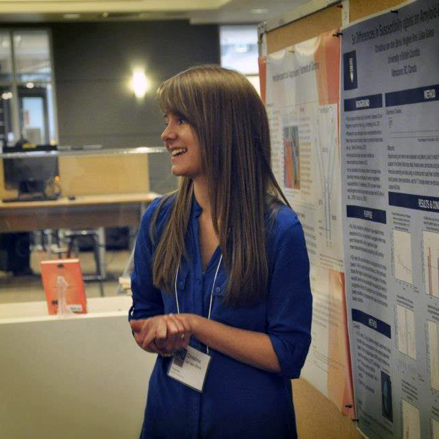
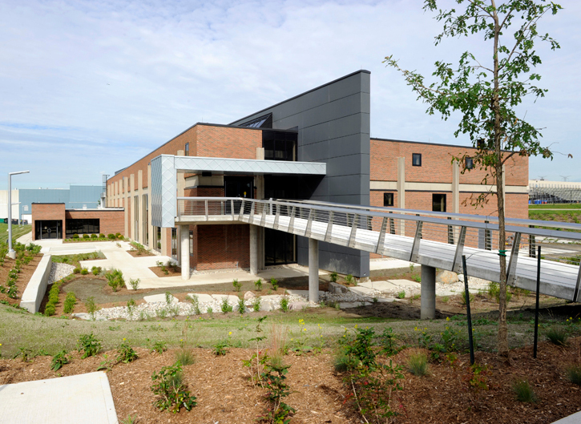

Cognitive Rehabilitation Neuroscience.
The overarching theme of the CNN Lab's research involves the translation of cognitive neuroscience research into brain and behaviour-based rehabilitation interventions to enhance higher cognitive (i.e. executive) functioning in healthy aging, acquired brain injury and brain disease - an approach described as cognitive rehabilitation neuroscience.
CNN Lab Research
Executive functions involve coordination and integration of specific cognitive processes (e.g., memory, sensory processing, language) in the service of more complex, goal-directed behaviours (e.g., planning, problem-solving, multi-tasking, inhibitory control). We utilize an array of cognitive neuroscience methods (e.g., fMRI, diffusion imaging) to measure the integrity of functional and structural neural networks subserving executive functioning and relate these to standard and experimental neuropsychological measures. These brain data subsequently guide assessment and treatment approaches.
Areas of Interest

Neural correlates of higher cognitive (i.e. executive control) functions in normal aging, brain injury and disease.
Neurorehabilitation interventions to enhance cognitive functioning in normal aging and neurological populations.

Integration of brain and behavioural measures in neuropsychological assessment.

Assessment of cognitive capacity in real-world settings.
Find out more about our current studies

Neurocognitive Aging &
Executive Functions (D.E.F.)
Project Lead: Sabrina Lemire-Rodger
Other researcher(s): Jasmin Amin, Navena Lingum
In this project, we are examining the neural networks that contribute to executive functioning across the adult life span. Using functional brain imaging and an innovative new paradigm, we hope to gain a better understanding of the subtleties of the executive control system and how it regulates our behaviour.
Famous Places
& Faces (F.P.F.)
Project Lead: Benjamin Cassidy
Other researcher(s): Fazila Ikram, Kiarash Salehigilani
We are investigating neural network contributions to processing of faces and places and how connectivity changes across the lifespan support higher visual processing.
Goal-Directed
Cognition (Goal-D)
Project Lead: Benjamin Cassidy
Other researcher(s): Katie Walsh (and all volunteers)
This projects investigates differences in goal-directed cognition in young versus older adults using behavioural assessments and neuroimaging.

Research Examining Age &
Cognitive Health (R.E.A.C.H.)
Project Lead: Areeba Adnan
Other researcher(s): Karin Kantarovich
This project's primary aim is to investigate neural patterns of decline observed in goal-directed cognition in healthy aging and how these patterns can be changed using cognitive intervention.
Facilities
York University Neuroimaging Centre
Room 1009, Sherman Health Sciences Research Centre
The Sherman Health Science Research Centre's centerpiece is a neuroimaging laboratory suite that features the latest functional Magnetic Resonance Imaging (fMRI) technology. This facility gives York's researchers in-house access to this technology, which has many applications to human health. Read an overview of the facility.
Behavioural Assessment Suite
Room 1006, Sherman Health Sciences Research Centre
The CANN group has a dedicated behavioural assessment suite which is fully equipped for administration of the NIH Toolbox along with other computer-based and paper-pencil behavioural tasks. The NIH has developed a computer-based battery of behavioural measures spanning across four domains: emotion, cognition, motor and sensation.
Publications
---- Journal Articles ----
Gallen, C. L., Turner, G.R., Adnan, A. and D'Esposito. M. (2016). Reconfiguration of brain network architecture to
support executive control in aging. Neurobiology of Aging 44: 42-52.
Sharma, B., Tomaszczyk, J.C., Dawson, D., Turner, G.R., Colella, B., and Green, R.E. (2016). Feasibility of online self
-administered cognitive training in moderate-severe brain injury. Disability Rehabilitation: 1-11.
Dey, A. K., Stamenova, V., Turner, G.R., Black, S.E., and Levine, B. (2016). Pathoconnectomics of cognitive impairment in
small vessel disease: A systematic review. Alzheimer's and related Dementias 12(7): 831-845.
Turner, G.R. & Spreng, R.N. (2015). Prefrontal engagement and reduced default network suppression co-occur and are
dynamically coupled in older adults: The default - executive coupling hypothesis of aging. Journal of Cognitive Neuroscience.
27 (12), 2462-2476.
Spreng, R.N., Gerlach, K.D., Turner, G.R. & Schacter, D.L. (2015). Autobiographical planning and the brain: Activation and
its modulation by qualitative features. Journal of Cognitive Neuroscience. 27 (11), 2147-2157.
Soh, D.W., Skocic, J., Nash, K., Stevens, S., Turner, G.R., Rovet, J. (2015). Self-regulation therapy increases frontal gray
matter in children with fetal alcohol spectrum disorder: evaluation by voxel-based morphometry. Frontiers in Human
Neuroscience. 9 (108).
Spreng, R.N., DuPre, E., Selarka, D., Garcia, J., Gojkovic, S., Mildner, J., Luh, W.-M. & Turner, G.R. (2014). Goal-congruent
default network activity facilitates cognitive control. Journal of Neuroscience. 34, 14108-14111.
Tomaszczyk, J. C., Green, N. L., Frasca, D., Colella, B., Turner, G.R., Christensen, B. K., & Green, R. E. (2014). Negative
neuroplasticity in chronic traumatic brain injury and implications for neurorehabilitation. Neuropsychology Review 24(4):409-27.
Middleton, L., Lam, B., Fahmi, H., Black, S.E., McIlroy, W., Stuss, D., Danells, C., Ween, J. & Turner, G.R. (2014). Prevalence
of domain-specific cognitive impairment in sub-acute and chronic stroke. Neurorehabilitation.
Persson, J., Spreng, R.N., Turner, G.R., Herlitz, A., Morell, A., Stening, E., Wahlund, L.-O. Wikström, J., Söderlund, H. (2014).
Sex differences in volume and structural covariance of the anterior and posterior hippocampus. NeuroImage, 99, 215-225.
Spreng, R.N. & Turner, G.R. (2013). Structural covariance of the default network in healthy and pathological aging. Journal of
Neuroscience, 33(38). 15226-15234.
Patel, R., Spreng, R.N. & Turner, G.R. (2013). Functional brain changes following cognitive and motor skills training: A
quantitative meta-analysis. Neurorehabilitation and Neural Repair, 27, 187-199.
Spreng, R.N., Sepulcre, J., Turner, G.R., Stevens, W.D., & Schacter, D.L. (2013). Intrinsic architecture underlying the relations
among the default, dorsal attention, and frontoparietal control networks of the human brain. Journal of Cognitive Neuroscience.
25, 74-86.
Turner, G.R. & Spreng, R.N. (2012). Executive control and neurocognitive aging: Dissociable patterns of brain activity for
working memory and inhibition. Neurobiology of Aging. 33, 826.e1-826.e13.
Turner, G.R., McIntosh, A.R., Levine, B. (2012). Dissecting altered functional engagement in TBI and other patient groups through
connectivity analysis: one goal, many paths (a response to Hillary). Frontiers in Systems Neuroscience. doi: 10.3389/ fnsys.2012.00010.
Noakovic-Agopian, T., Chen, A.J.W., Rome, S. Rossi, A., Abrams, G., D'Esposito, M., Turner, G.R. et al., (2012). Assessment of
Sub-components of Executive Functioning in Ecologically Valid Settings: The Goal Processing Scale. Journal of Head Trauma
Rehabilitation.
Chen, A-J.W., Britton, M. Turner, G.R., Vytlacil, J., Thompson, T., D'Esposito, M. (2012). Goal-directed attention alters the
tuning of object-based representations in extrastriate cortex. Frontiers in Human Neuroscience.
Crete-Nishihata, M., Baecker, R.M., Massimi, M., Ptak, D., Campigotto, R., Kaufman, L.D., Brickman, A.M., Turner, G.R., Steinerman,
J., and Black, S.E. (2012). Reconstructing the Past: Personal Memory Technologies Are Not Just Personal and Not Just for Memory.
Human-Computer Interaction. 27(1-2). 1-32.
Chen, A.J-R, Nycum, T., Novakovic-Agopian, T., Turner, G.R., D'Esposito, M. (2011). Training of goal-directed attention regulation
enhances control over neural processing for individuals with brain injury. Brain, 134 (Pt. 5). 1541-1554.
Koshimori, Y., Turner, G.R., Mikulis, D., Crawley, & Green, R.E.A. (2010) Diffusion tensor imaging vs conventional MRI for
single case diagnosis of traumatic brain injury in spinal cord injury patients. Brain Injury, 24(3), 458-459.
Turner, G.R., McIntosh, A.R., Levine, B. (2011). Prefrontal compensatory engagement in TBI is due to altered functional engagement
of existing networks and not functional reorganization. Frontiers in Systems Neuroscience, 5:9, doi: 10.3389/fnsys.2011.00009.
Levine, B., Schweizer, T.A., O'Connor, C., Turner, G.R., Gillingham, S., Stuss, D.T., Manly, T., Robertson, I.H. (2011).
Rehabilitation of executive functioning in patients with frontal lobe brain damage: A randomized control trial of Goal Management
Training. Frontiers in Human Neuroscience, 5:9, doi: 10.3389/fnhum.2011.00009.
Koshimori, Y., Turner, G.R. and Green, R.E.A. (2010). Research Digest: Mild-traumatic brain injury - a diagnostic challenge.
Neuropsychological Rehabilitation. 20(3), 471-478.
Green, R.E.A. and Turner, G.R. (2010). Growing evidence for influence of meditation on brain and behaviour. Neuropsychological
Rehabilitation.
Levine, B., Svoboda, E.M., Turner, G.R., Mandic, M., & Mackey, A. (2009). Behavioral and functional neuroanatomical correlates of
autobiographical memory in isolated retrograde amnesic patient M.L. Neuropsychologia, 47(11). Pages 2188-2196.
Turner, G.R. and Levine, B. (2008). Augmented neural recruitment during executive control processing following diffuse axonal injury.
Neurology, 71, 812-818.
Turner, G.R. and Green, R.E.A. (2008). Cognitive remediation in aging and ABI: A question of negative plasticity?
Neuropsychological Rehabilitation, 18(3), 372-384.
Schweizer, T.A., Levine, B., Rewilak, D., O'Connor, C., Turner, G.R., Alexander, M.P., Cusimano, M. Manly, T., Robertson, I., &
Stuss, D.T. (2008). Rehabilitation of executive functioning after focal damage to the cerebellum. Neurorehabilitation and Neural
Repair, 22, 72-77.
Turner, G.R. and Levine, B. (2006). fMRI of delayed response performance in healthy adults and the limits of cross-method convergence.
Neuroscience, 139(1). 327-337.
Green, R.E.A., Turner G.R., Thompson, W.F. (2004). Deficits in facial emotion perception in adults with recent traumatic brain injury.
Neuropsychologia, 42. 133-141. Co-Investigator
Levine, B., Turner, G.R., Tisserand, D.J., Graham, S.I., Hevenor, S.J., McIntosh, A.R. (2004). The functional neuroanatomy of episodic
and semantic autobiographical remembering: a prospective study. Journal of Cognitive Neuroscience. 1633-1646.
---- Book Chapters ----
Turner, G.R. & D'Esposito, M., (2012). Neurorehabilitation of executive functions. To appear in Textbook of neural repair and rehabilitation 2nd edition. Selzer (Ed.).
Turner, G. R. and D'Esposito, M. (2010). Functional neuroimaging in aging. Clinical Neurology of Aging, 3rd Edition. Knoefel, J. and Albert, M.L. (Eds). Oxford University Press.
Levine, B., Turner, G.R., Stuss, D. T. (2008). Rehabilitation of frontal lobe disorders. In Cognitive Neurorehabilitation: Evidence & Applications (2nd Edition). Stuss, D.T., Winocur, G.,
Robertson, I. H. (Eds.).
Turner, G.R. and Levine, B. (2004). Disorders of executive functioning and self awareness. In Cognitive and Behavioural Rehabilitation, J. Ponsford (Ed.). 224-268.
---- Funding Sources ----
People
Principal Investigator
Gary R. Turner, Ph.D., C Psych.
Associate Professor
Department of Psychology
Faculty of Health
York University
Adjunct Scientist
Heart and Stroke Foundation Partnership for Stroke Recovery
Sunnybrook Health Sciences Centre
Email: grturner@yorku.ca
As principal investigator I'm dedicated to building the lab as a global centre of excellence in cognitive neuroscience and neurorehabilitation. My goal is to create a scientific and learning environment that will motivate trainees to push the boundaries of translational neuroscience. When not in the lab, I'm usually chasing my dog who is chasing squirrels throughout the many amazing ravines in the city. Outside of Toronto I spend as much time as possible on the shores of the North (Newfoundland) and South (Brasil) Atlantic.
Graduate Students

Christina van den Brink, MA, Ph.D. Student
I am a first year PhD student in the Clinical Psychology program (Neuropsychology stream). I defended my Masters this summer investigating sex differences in the influence of brain and lifestyle factors on neurocognitive aging. Broadly, I am interested in investigating mechanisms influencing neuroplasticity in order to ultimately inform treatment intervention and promote brain health. When I'm not in the lab, I love to hike, cook, and be outdoors.

Jaeger Lam, MA, Ph.D. Student
I received my undergraduate degree at the University of Toronto where I researched the neural basis of personality, and borderline personality disorder under the supervision of Dr. Anthony Ruocco. Currently, I am enrolled in the Clinical Psychology (Clinical Neuropsychology Stream) under the supervision of Dr. Gary Turner. I use functional magnetic resonance imaging to investigate neural networks that mediate the relationship between executive functions and memory. Additionally, I am interested in how personality affects the expression of cognitive processes on a neural level. In the future, I hope to investigate the neural basis of psychopathy from a network perspective. Outside of the lab, I enjoy listening and playing to different kinds of music.
Sabrina Lemire-Rodger, BScH, MA
3rd year Doctoral Student
I am a member of the Clinical Neuropsychology stream within the Clinical Psychology program here at York, which means I am getting in depth training in neuropsychological assessment, cognitive rehabilitation and psychotherapy as well as cognitive neuroscience research. My work in the Turner lab focuses on different aspects of executive functioning in the human brain, across the life span. My masters thesis investigated the dissociation between neural networks underlying working memory, inhibition and task switching. My doctoral work is now examining the top-down control of attention. In the past, my research interests included meta-cognition, reasoning and theory of mind in both humans and animals. I completed my BScH in Psychology from Queen's University where I studied visual attention in rhesus macaques. Before joining the CNN lab, I worked with Dr. Bradley Buchsbaum studying visual and auditory memory at the Rotman Research Institute. I also completed a dolphin research internship in Key Largo, Florida (Yes: dolphins have minds, too! But I prefer working with people - less fish handling.) When I am not nerding out on brain stuff, you'll find me training my dog "Pavlov", hiking a tall mountain, or sailing on Lake Ontario.
Undergraduate Students
Anas Saleh
Project Manager, Undergraduate Honours Thesis 2016
I am a senior at York University completing my BSc Honours in Psychology. I joined the CANN Lab as a research assistant in November 2014, and then went on to complete my honours thesis under the supervision of Dr. Gary Turner where I studied the cognitive mechanisms underlying attention. Currently, I am working on a follow-up study that I developed with PhD candidate, Sabrina Lemire-Rodger, to further investigate the relationship between the different components of goal-directed attentional control. My interests in neuropsychology are broad, although I have a particular interest in how memory and executive functioning change over the course of one's lifetime. Outside the lab, I enjoy reading, listening to music, and keeping up to date with politics.
Evan Connell, BA
Undergraduate Honours Thesis, Psychology 2016
I am a fourth year undergraduate student in the Bachelor of Arts Honours Psychology Program at York University. Currently, I am working on my honours thesis under the supervision of Dr. Gary Turner and Sabrina Lemire-Rodger examining the neural basis of sustained attention and task switching. Other areas of research that interest me are cognitive neuroscience of executive functions and how these processes change with age. Outside the lab I enjoy travelling, spending time with friends (and especially their pets), and binge watching shows on Netflix.
Said Talani
Undergraduate Honours Thesis Student 2016-2017
I am currently completing my fourth year in the Bachelor of Science Honours Psychology program at York University. I am working on my thesis under the supervision of Dr. Gary R. Turner and the mentorship of Jaeger Lam, where we are investigating the neural processes that are associated with interactions between memory and executive function. More specifically, my study is concerned with the effects of visual familiarity on working memory performance. When I get some time off you can find me playing soccer, watching nature documentaries, or on the set of various locally filmed television shows as a background actor.
Volunteers
Sydney Gorlick
Undergraduate BA, Research Volunteer
I am a fourth-year undergraduate psychology student at York University in the Specialized-Honours Bachelor of Arts program. Currently, I am volunteering in the CAN lab as a Region of Interest locator for multiple Autism Spectrum Disorder studies. In my spare time I like to travel North America outdoor rock climbing with my dog.
Participate
C.N.N Participation Form
Our goal is to learn more about thinking skills, such as reasoning, memory, and attention, and how these skills change with aging.
We conduct both behavioural and brain imaging studies in our lab at York University and are always looking for individuals of all ages
to come in and participate!
If you are eligible and enroll in our study, participation will involve answering questionnaires, performing
cognitive tasks, and/or possibly having an fMRI scan.
Would you be interested in being screened to see if you're eligible for this research?
If so please contact us using the form to the right. All personal information given will be held confidential. We look forward to hearing from you!
Contact
Need some help finding us?
We are located in room 1006 in the Sherman Health Sciences Research Centre (SHR) at York University in Toronto, Ontario, Canada conveniently
across the hall from the neuroimaging suite. Please use the maps above to find your way to our lab!
Or use the interactive Keele Campus map on the
York University Website.
We would love to hear from you!
Mailing Address:
Sherman Health Sciences Research Centre
York University
4700 Keele St.
Toronto, ON M3J 1P3
Telephone: +1(416)-736-2100 ext. 33516
Email: cnnlab@yorku.ca

Collaborations
Cognitive Aging Neuroscience Lab
Dr. W. Dale Stevens
Laboratory for Brain and Cognition
Dr. Nathan Spreng
$.ajax({
url: 'path/to/php/file',
type: 'POST',
data: {id:id},
Uppsala Memory Lab
Dr. Hedvig Soderlund
D'Esposito Lab
Dr. Mark D'Esposito

COGNITIVE NEUROSCIENCE & NEURO-INTERVENTION LAB © 2017